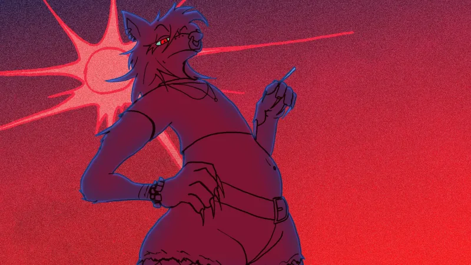

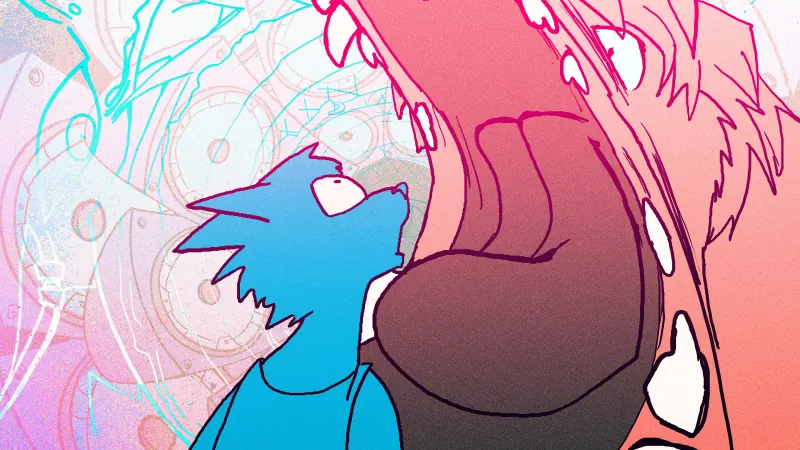

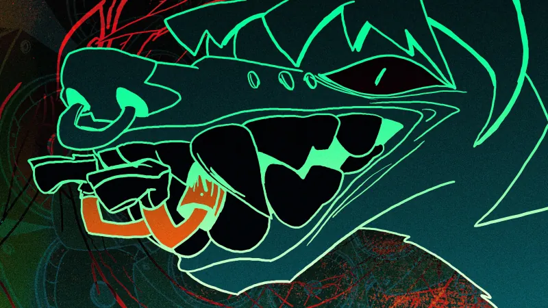

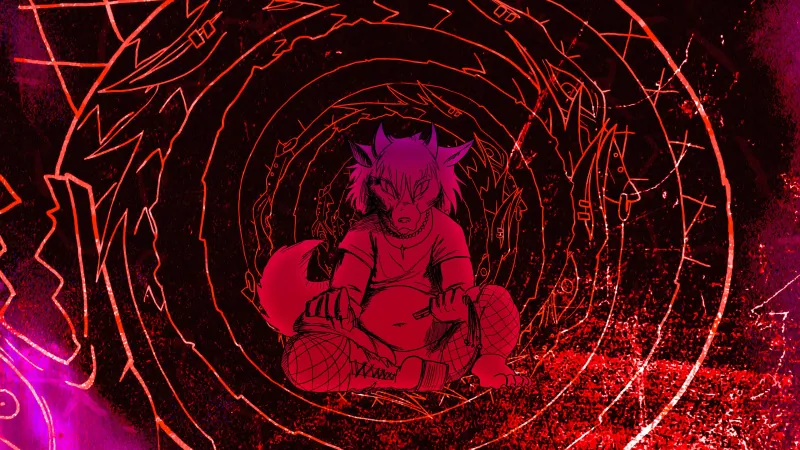

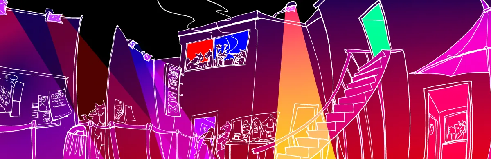
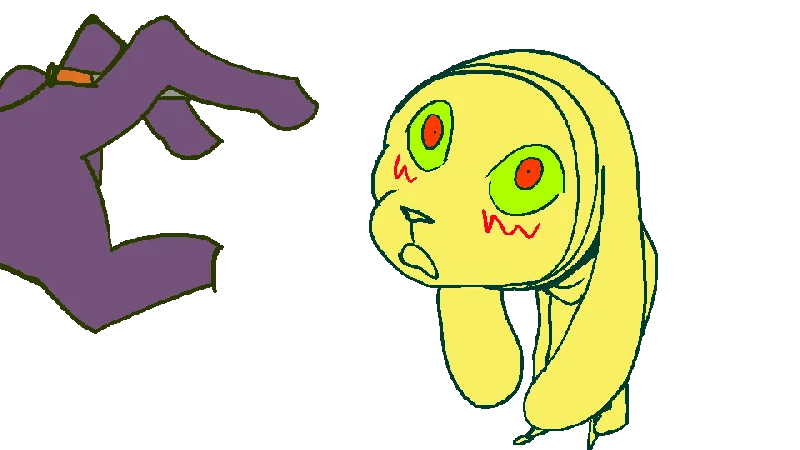
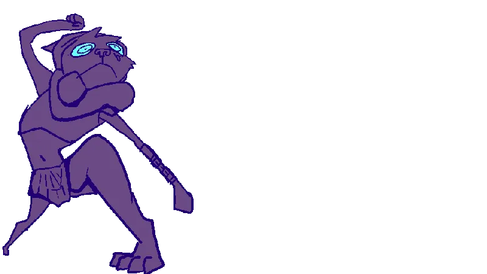
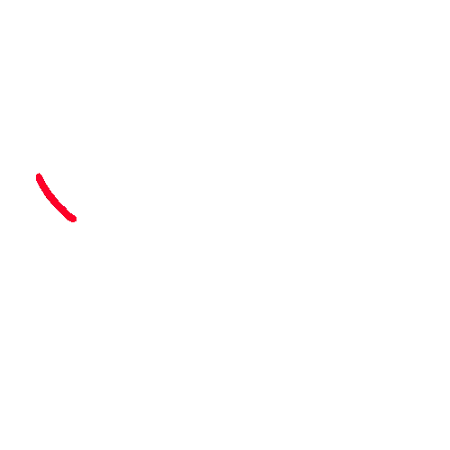
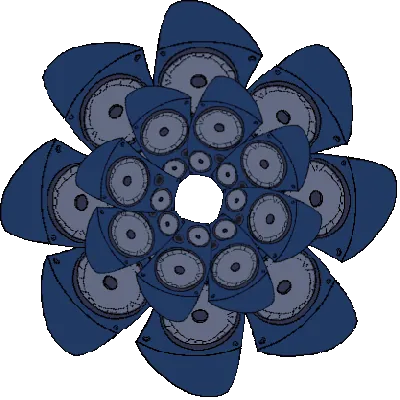
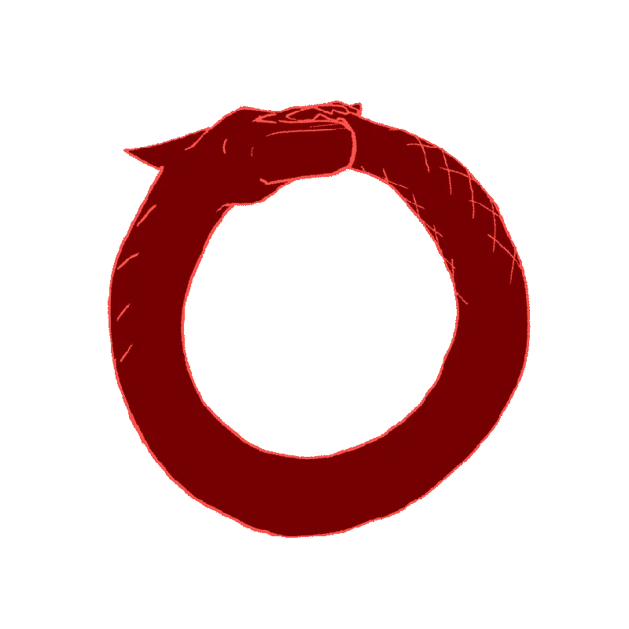
Animation cycles from the film, before compositing
2D animator and designer in Los Angeles. I make hand-drawn character animation, motion graphics and illustration for music videos, live shows and radio.
Available for full-time and freelance work
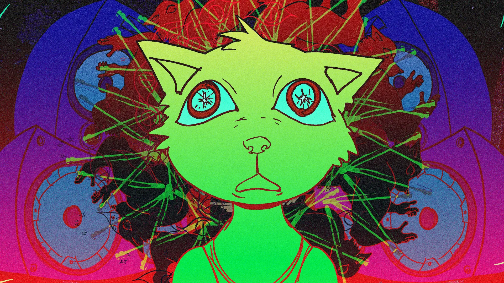
Watch the film · 3:22FERAL — music video for Bunny G & Kurei, 2025. Direction, animation and compositing.
Official Selection: Silverlake Shorts · Indie Film LA · Hollywood Queer Shorts Film Festival










Animation cycles from the film, before compositing
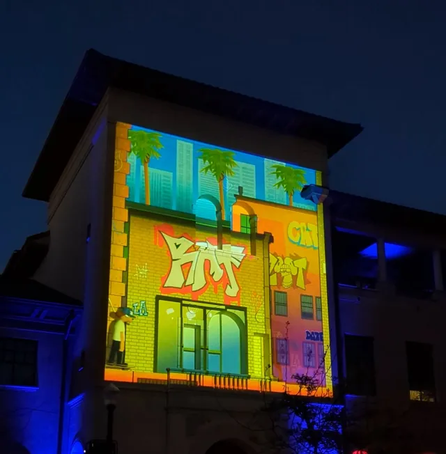
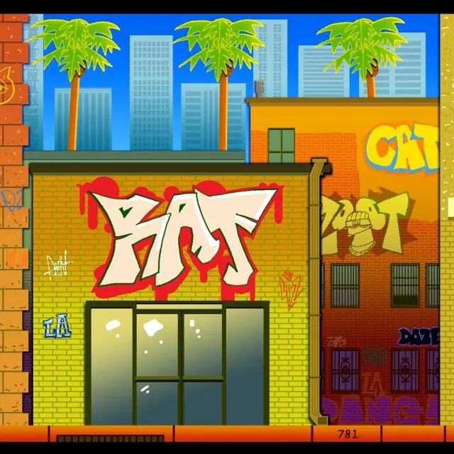
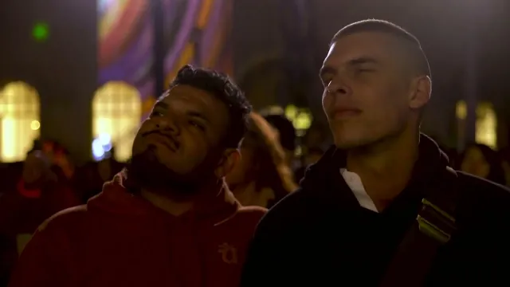
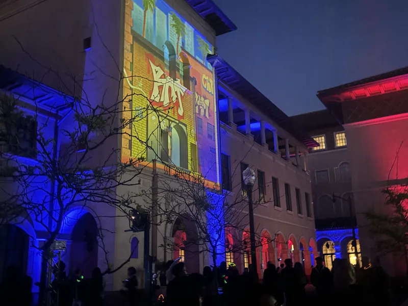
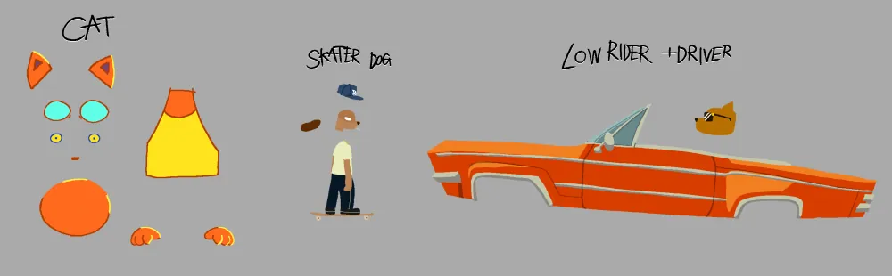
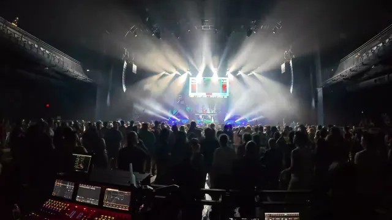
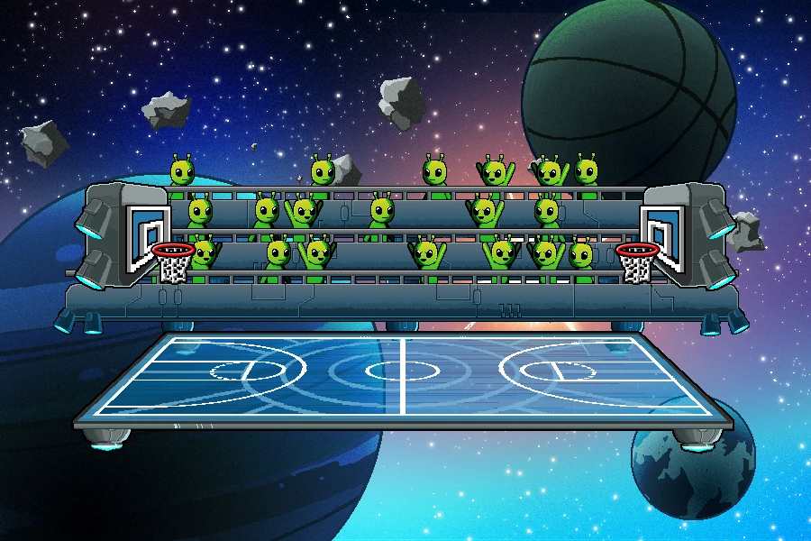
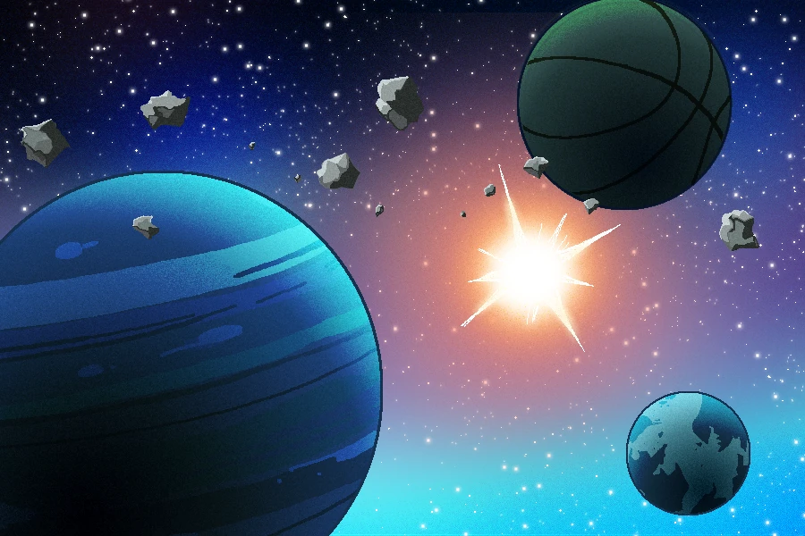
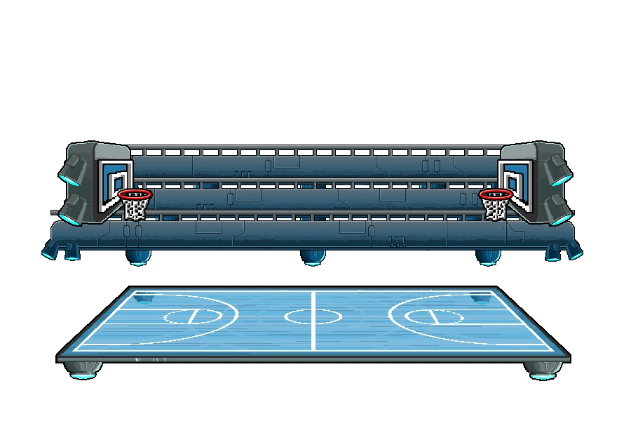
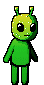
Final composite, with its background and court layers and one crowd sprite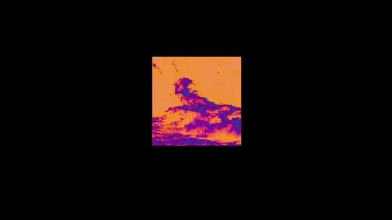
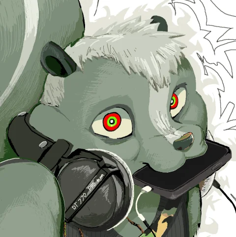
I'm a 2D animator, designer and illustrator, and a recent graduate of the animation program at USC's School of Cinematic Arts.
My music video FERAL, which I directed, animated and composited, was an official selection at Silverlake Shorts, Indie Film LA and the Hollywood Queer Shorts Film Festival. I spent two years as Design Director of KXSC Student Radio, and I've made visuals for a touring VJ set and a projection-mapping show.
I'm open to full-time and freelance work in animation, motion design and illustration.
Get in touch
matthew@ratthew.org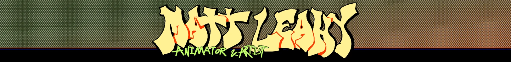